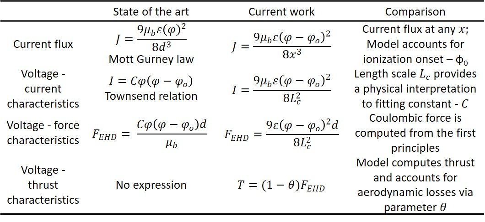
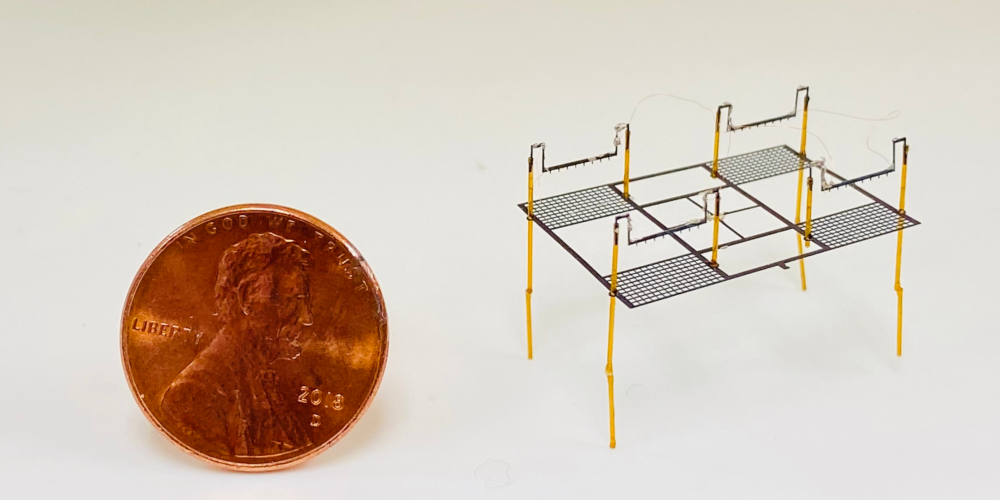
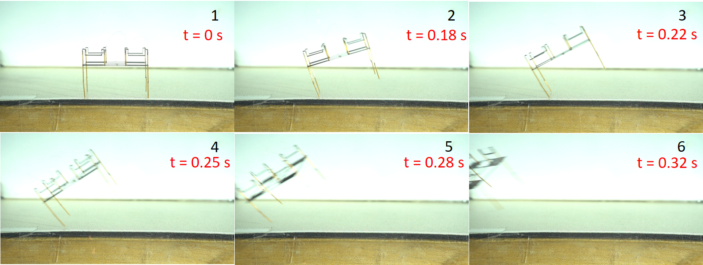
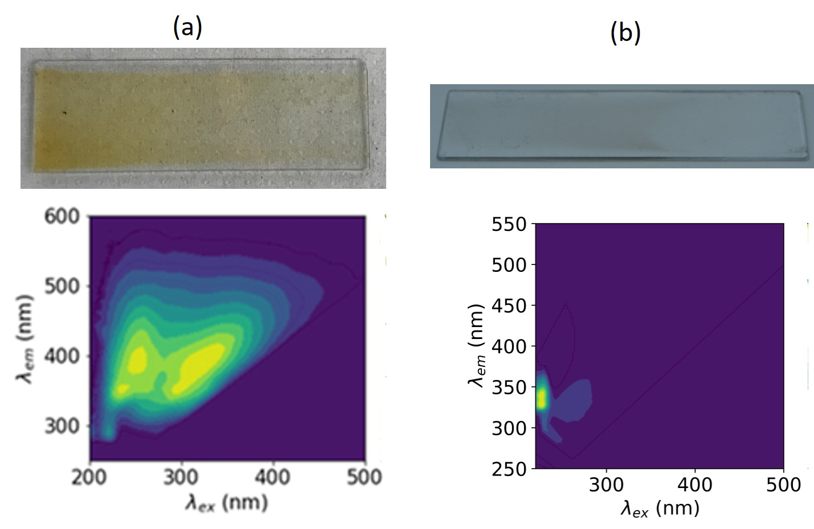
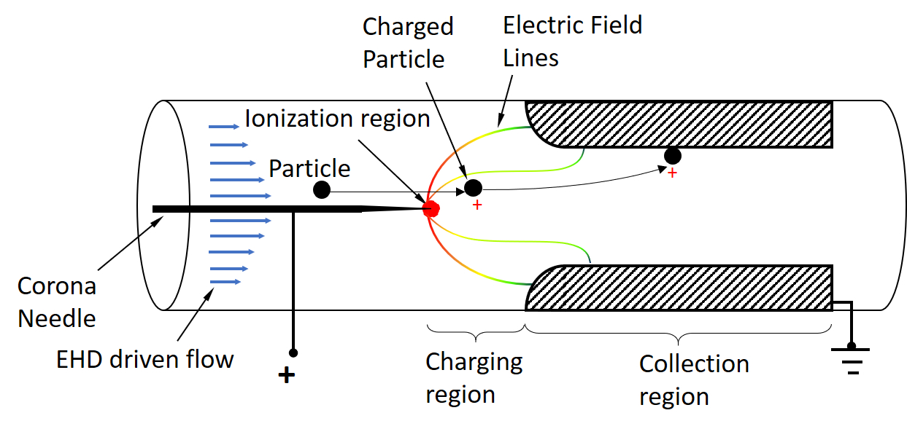
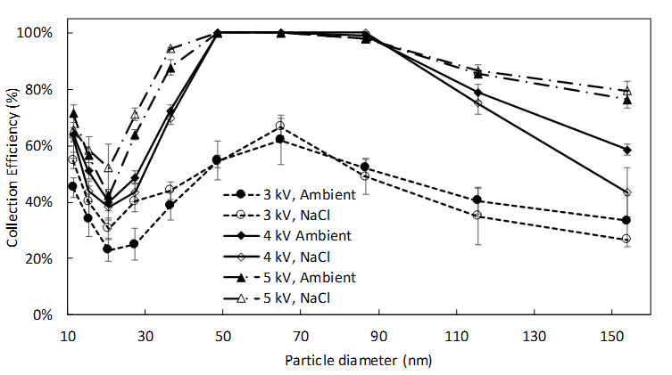
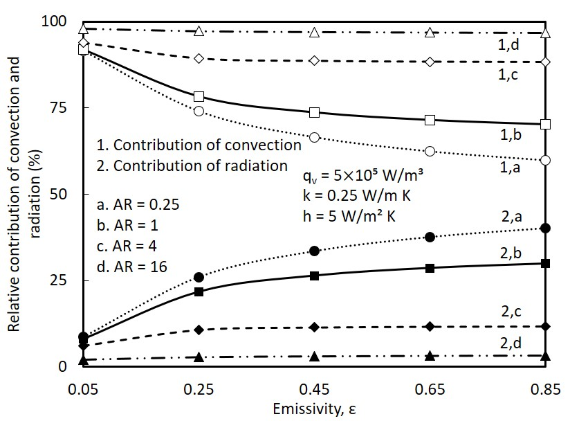

Research
For my thesis research, I have been investigating ideas around propulsion and control of aerial vehicles using plasma actuators, with the goal of creating a next generation ultra quiet and efficient aerial vehicle.
I also have and interest in environmental science and exploring the real world applications of plasma, particularly in the area of pollution monitoring, sanitization and chemical treatment.
Interests
- Active flow control - separation control, drag reduction and lift augmentation
- Plasma actuators
- Flow measurement techniques
- Low Reynolds number flow
- Aerodynamics
- Electrohydrodynamics
- Dielectric barrier discharge
- Corona disccharge
- Electrostatic precipitation
Research Projects
- Development of plasma vortex generator and force characterization
- Active flow control using plasma actuation
Electrohydrodynamic (EHD) thrust is produced when ionized fluid is accelerated in an electric field due to the momentum transfer between the charged
species and neutral molecules. In this study, we extend the previously reported analytical model that couples space charge, electric field, and momentum transfer to
derive thrust force in 1D planar coordinates. The electric current density in the model can be expressed in the form of Mott-Gurney law. After the
correction for the drag force, the EHD thrust model yields good agreement with the experimental data from several independent studies. The EHD thrust
expression derived from the first principles can be used in the design of propulsion systems and can be readily implemented in the numerical simulations.
This project was carried under the guidance of Prof. Igor Novosselov and Prof. Alexander Mamishev
|

Comparison of state of the art and current model for voltage-current and voltage-thrust characteristics
|
To date, insect scale robots capable of controlled flight have used flapping-wings for generating lift,
but this requires a complex and failure-prone mechanism. A simpler alternative is electrohydrodynamic (EHD) thrust, which requires no moving mechanical
parts. In EHD, corona discharge generates a flow of ions in an electric field between two electrodes; the high-velocity ions transfer their kinetic
energy to neutral air molecules through collisions, accelerating the gas and creating thrust. In this study, we utilize laser machining fabrication to
build EHD thrusters for centimeter-sized aerial robots. The process allows for use of a greater variety of electrode materials and eliminates the need
for a cleanroom facility. For example, it allows fabricating a complete four-thruster device in a matter of minutes. Our four-thruster device measures
1.8 × 2.5 cm and is composed of steel emitters and a lightweight carbon fiber mesh. We measured the electrical current and thrust of each thruster of
our four-thruster design, showing agreement with the Townsend relation. The device was able to lift its weight, as indicated by thrust measurements and
free-flight connected to a wire tether. The thrust-to-weight ratio of our device at takeoff voltage of 4.6 kV is 1.38 with a power consumption of 0.037 W.
The peak thrust-to-weight ratio of our thruster at the maximum actuation voltage of 5.2 kV (with a typical operating range of 3.6 kV to 5.2 kV) is 3.03
with a power consumption of 0.104 W.
This project was carried under the guidance of Prof. Igor Novosselov and Prof. Sawyer Fuller
|

An assembled Quad-thruster robot next to a U.S.penny The 1.8 × 2.5 cm quad-thruster having a mass of 37 mg is shown.

The thruster is resting on the table and it was able to lift off at 4.6 kV. |
- Plasma boundary layer and flow development
An electrohydrodynamic (EHD) flow induced by planar corona discharge in near wall region is investigated in this study experimentally and via a multiphysics computational model.
The EHD phenomena has many potential engineering applications but requires a mechanistic understanding of the ion and flow transport. The EHD device consists of two electrodes flush mounted on the surface
to create an airflow along the plate. Constant current hotwire anemometry is used to measure the flow velocity profile. The applied voltage between the electrodes is varied and the resulting effects in the
charge density and flow field are measured. The airflow near the wall acts a jet and it reaches a maximum of 2 m/s with an energy conversion efficiency of ~3%. The velocity decreases sharply as we move
vertically from the plate. Multiphysics numerical model couples ion transport equation and the Navier Stokes equations to solve for the spatiotemporal distribution of electric field, charge density and
flow field. The numerical results match experimental data shedding new insights into mass, charge and momentum transport phenomena. The EHD driven flow can be applied to the design of new plasma actuators for flow control.
This project was carried under the guidance of Prof. Igor Novosselov and Prof. Alexander Mamishev. This project was supported by the Joint Center for Aerospace Technology Innovation, USA in collaboration with Aerojet Rocketdyne
|
An assembled Quad-thruster robot next to a U.S.penny The 1.8 × 2.5 cm quad-thruster having a mass of 37 mg is shown.
The thruster is resting on the table and it was able to lift off at 4.6 kV. |
Exposure to fine and ultrafine particulate matter (PM) from combustion and manufacturing processes can cause
significant health effects. The toxic potential of inhaled particles depends on particle size and their chemical composition. Collection of air-borne
particles on a filter, their extraction into a solvent like cyclohexane and fluorescence analysis is costly and time consuming. In this study, we demonstrate a novel
ultrafine particle electrostatic collector that uses a wire to rod ionizer to charge the particles and ionic wind to drive the flow. The particles are
then directed on to a glass slide by the electric field between the collection electrode and repelling electrode. The slide with collected particles was
then coated with PDMS (Polydimethylsiloxane). Fluorescence Excitation Emission Matrix (EEM) is used to characterize organic compounds and it can be used
to compact, low-cost sensor development
This project was carried under the guidance of Prof. Igor Novosselov. This project was supported by the National Institutes of Health, USA
|

Collected glass slides a) Cigarette smoke and b) Ethane 73% dilution and their respective EEM
|
Ultrafine particle behavior in electro-hydrodynamic (EHD) flow induced by corona discharge is studied experimentally
and numerically and EHD flow serves as a primary particle sampling mechanism. Multiphysics numerical model couples ion transport equation and
the Navier-Stokes equations (NSE) to solve for the spatiotemporal distribution of electric field, charge density, and flow field;
the results are compared with experimental velocity profiles at the exit. Experimentally evaluated particle transmission trends for ambient and
NaCl nanoparticles in the 20 nm–150 nm range are in good agreement with the theoretical models. However, for particles in the
10 nm–20 nm size range, the transmission is lower due to the increased particle charging resulted from their exposure to the high-intensity
electric field and high charge density in the EHD driven flow. These conditions yield a high probability of particles below 20 nm to
acquire and hold a unit charge. The transmission is lower for smaller particle (10 nm) due to their high charge to mass ratio, and
it increases as the single-charged particles grow in mass up to 20 nm, resulting in their lower electrical mobility. For particles
larger than 20 nm, the electrical mobility increases again as they can acquire multiple charges. The results shed insight into
interaction of nanoparticle and ions in high electrical field environment, that occur in primary EHD driven flows and in the secondary
flows generated by corona discharge.
This project was carried under the guidance of Prof. Igor Novosselov. This project was supported by the National Institutes of Health, USA
|

Schematic of the EHD particle collector

Particle collection efficiency as a function of their size |
- Experimental, numerical and analytical model development for corona discharge
Ultrafine particle behavior in electro-hydrodynamic (EHD) flow induced by corona discharge is studied experimentally
and numerically and EHD flow serves as a primary particle sampling mechanism. Multiphysics numerical model couples ion transport equation and
the Navier-Stokes equations (NSE) to solve for the spatiotemporal distribution of electric field, charge density, and flow field;
the results are compared with experimental velocity profiles at the exit. Experimentally evaluated particle transmission trends for ambient and
NaCl nanoparticles in the 20 nm–150 nm range are in good agreement with the theoretical models. However, for particles in the
10 nm–20 nm size range, the transmission is lower due to the increased particle charging resulted from their exposure to the high-intensity
electric field and high charge density in the EHD driven flow. These conditions yield a high probability of particles below 20 nm to
acquire and hold a unit charge. The transmission is lower for smaller particle (10 nm) due to their high charge to mass ratio, and
it increases as the single-charged particles grow in mass up to 20 nm, resulting in their lower electrical mobility. For particles
larger than 20 nm, the electrical mobility increases again as they can acquire multiple charges. The results shed insight into
interaction of nanoparticle and ions in high electrical field environment, that occur in primary EHD driven flows and in the secondary
flows generated by corona discharge.
This project was carried under the guidance of Prof. Igor Novosselov. This project was supported by the National Institutes of Health, USA
|
Schematic of the EHD particle collector
Particle collection efficiency as a function of their size |
In this study on conjugate convection with surface radiation from
a rectangular open cavity equipped with four non-identical flush-mounted discrete heat sources, parametric studies are performed. The governing equations for
temperature distribution are evolved through appropriate energy balance between heat generated, conducted, convected and radiated from the cavity. The governing equations are later discretized into algebraic form
using finite difference formulation and are subsequently solved simultaneously using Gauss-Seidel iterative solver. A number of parametric
studies showcasing the effects of the independent parameters, like aspect ratio, surface emissivity, thermal conductivity and convection
heat transfer coefficient, on various important results are made.
This project was carried under the guidance of Prof. Gururaja Rao
|

|
- Detailed study on aerodynamics of flapping aerial vehicles and design of flapping wing mechanism
Other Projects
- Airborne virus inactivation using non-thermal plasma reactor
- Electromechanical nerve stimulation using TENS device